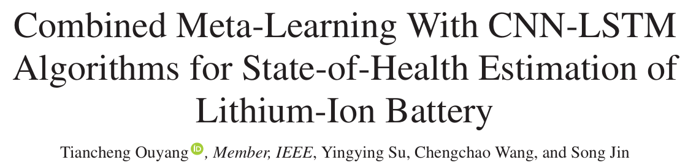

MAML-CNN-LSTM 모델 논문 Contribution 분석
MAML-CNN-LSTM 모델 논문에 대해서 모델의 Contribution을 따로 요약해보았습니다.
1. MAML-CNN-LSTM 모델 논문
1. 주요 Contribution
- 논문에선, 다른 딥러닝 모델들이 학습으로 사용된 배터리와, 직접 SOH를 추정할러는 배터리가 다를 시, 제대로 예측을 진행하지 못하는 일반화의 문제점이 있다 비판합니다.
- 따라서, 논문에선 기존 딥러닝 모델인 CNN-LSTM 모델에 메타 학습 기법중 하나인 MAML(Model-agnostic Meta-learning Model)을 사용하여, 이 일반화의 문제를 해결할러 합니다.

TABLE 1에 모델의 메타 학습과 관련된 과정이 잘 설명되어있습니다.
1) Pre-training process(사전 학습 과정)
모델이 학습하는 과정에서, 어떠한 타깃 배터리가 등장하더라도, 적은 양의 데이터와 적은 양의 파라미터 업데이트를 사용하여 적응할 수 있도록, CNN-LSTM 모델의 최적의 파라미터(가중치, 편향) 값을 찾는 과정입니다.
논문에서는 NASA 배터리 데이터셋을 사용하여서, 위 사전학습 과정을 거치면서, 모델의 가장 최적의 파라미터 값을 찾습니다.
2) Fine-tuning process(미세-조정 과정)
타깃 배터리 데이터셋에 맞추어서, 사전학습 과정에서 구한 최적의 파라미터 값을 사용하여 타깃 배터리에 가장 최적의 모델 파라미터로 미세 조정하는 과정입니다.
위 일련의 과정을 통하여, 사전 학습 과정에선 CNN-LSTM 모델이 어떠한 타깃 배터리가 오더라도 빠르게 적응할 수 있는 최적의 파라미터를 구하고(이것을, MAML 프레임워크의 목표 구하기 과정이라고 합니다.)
미세-조정 과정에선, 사전 학습 과정에서 구한 최적의 파라미터를 사용하여, 타깃 배터리에 가장 최적인 파라미터로, 모델들을 조정합니다.
이렇게 하면, CNN-LSTM 모델은, 타깃 배터리의 데이터가 적어도, 가장 적은 조정을 통하여 사전 학습된 배터리와 여러 특징이 다른 타깃 배터리라 하더라도, 빠르게 적응하여 SOH를 추정할 수 있는 능력을 갖게 됩니다.
즉, 모델의 일반화 성능을 뛰게 만드는 겁니다.